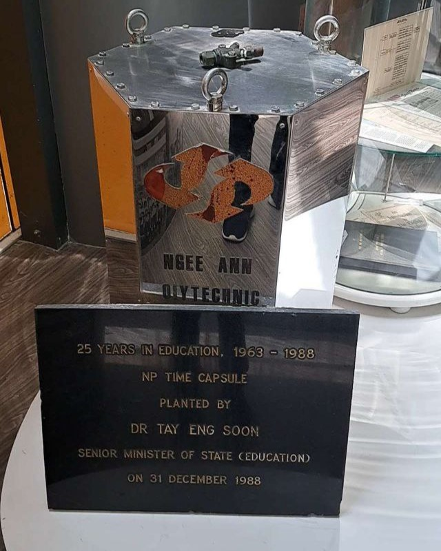
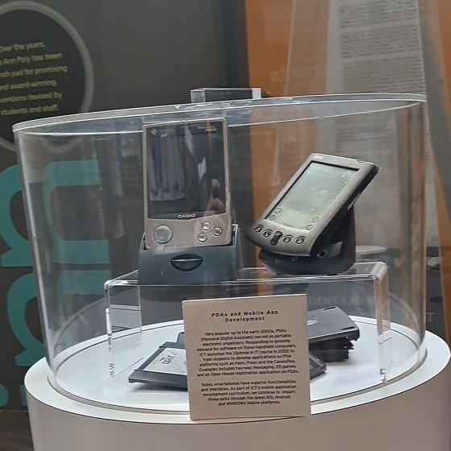

Artifacts

Oscilloscope
80s-90s-2000s

Eiki Film Projector
1950s-1980s

NP Time Capsule
1963-1988

Personal Digital Assistants
1990s-Early 2000s
Select an Artifact
Select an artifact to view it in 3D.